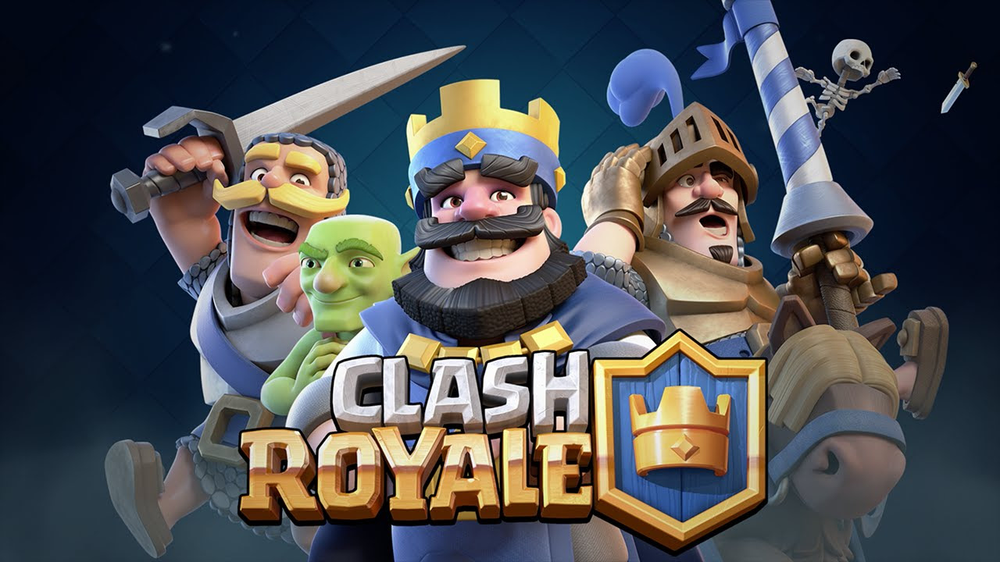

¿Qué es Clash Royale?
Clash Royale es un juego de estrategia en tiempo real, en el que podremos enfrentarnos contra otros jugadores a través de Internet, en frenéticos duelos protagonizados por los míticos personajes de Clash of Clans. Encontraremos a los gigantes, los caballeros, los esqueletos con bombas, las arqueras, y a todos los demás
El sistema de juego de Clash Royale es sencillo y directo. Cada jugador comenzará la partida con tres torres: una central y dos laterales. El objetivo será utilizar a nuestras tropas para destruir la torre central del enemigo, al mismo tiempo que defendemos nuestras propias torres. Cada partida dura tres minutos... con un tiempo extra añadido si el duelo está empatado al final del tiempo reglamentario
En Clash Royale podremos utilizar muchas tropas diferentes, pero primero tendremos que desbloquearlas. Para desbloquear tropas y subirlas de nivel, necesitaremos coleccionar sus cartas. Y las cartas las encontraremos en el interior de los cofres, que podremos ir ganando a medida que consigamos victorias.

Desarrolladores
Supercell es una empresa de desarrollo de juegos para móviles con unos aproximadamente 200 empleados. La compañía fue fundada en junio de 2010 en Helsinki, Finlandia. Ilkka Paananen es CEO de la compañía.
En 2011, comenzó a desarrollar juegos para dispositivos móviles y desde entonces ha lanzado 5 juegos: Hay Day, Clash of Clans, Boom Beach, Clash Royale y Brawl Stars.3 Clash of Clans y Clash Royale han generado ingresos de unos 2,5 millones de dólares diarios en 2016.
El 3 de enero de 2016 publicó Clash Royale, que cosechó gran éxito, y, el 21 de Junio de ese año, la compañía fue adquirida por Tencent por 8.600 millones de dólares5
El 15 de junio de 2017 se anunció Brawl Stars.